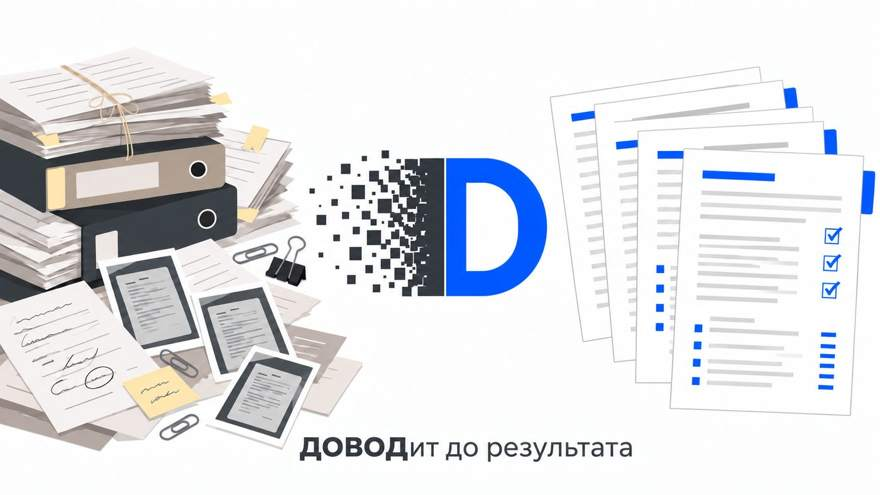

Папка дела на входе: сканы, фотографии, docx, переписка. На выходе: опись материалов с противоречиями, правовая позиция, проект документа с проверенными ссылками на нормы. Документы не покидают ваш компьютер.
Каждый шаг это одна команда в окне Довода. Между шагами ничего настраивать не нужно.
Распознавание сканов и фотографий, единый текст дела с номерами страниц, обезличивание: имена, паспорта, адреса, даты рождения заменяются на псевдонимы, карта соответствий остаётся у вас.
/dovod:prepare
Опись материалов, противоречия между документами, чего в папке не хватает. Затем правовая позиция по фактам дела с указанием документа и страницы под каждым утверждением.
/dovod:inventory /dovod:position
Стадия дела и нужный документ: заявление, отзыв, жалоба. Проект пишется по позиции, ссылки на нормы и судебную практику проверяются по правовой базе, непроверенное помечается отдельно.
/dovod:stage /dovod:draft
Проект сверяется с позицией, расхождения исправляются. Реальные имена и реквизиты возвращаются на место, готовые документы собираются в docx в папке дела.
/dovod:reconcile /dovod:restore
Распознавание и обезличивание выполняются локально. Языковой модели уходит только обезличенный текст, в котором нет ни одного настоящего имени, паспорта или адреса. Обратная подстановка происходит тоже у вас, по карте, которую видите только вы.

Не чат общего назначения, а конвейер под работу с делом: каждый инструмент решает одну задачу и проверяется отдельно.
Два движка OCR с выбором лучшего результата на каждой странице, поворот перекошенных снимков, отметка страниц, которые прочитать не удалось.
Фамилии в любом падеже, инициалы, паспорта, ИНН, телефоны, адреса, даты и места рождения. Одна и та же персона получает один псевдоним во всех документах.
Каждая ссылка в проекте сверяется с правовой базой: статья существует, номер и дата акта совпадают, цитата есть в тексте. Непроверенное так и помечается.
Под каждым утверждением позиции стоит документ, страница и цитата. Утверждение без опоры не попадает в проект.
Довод сейчас проходит проверку на реальных делах. Установщик доступен на странице выпусков. Установка требует Python 3.13 и Tesseract OCR, подробная инструкция приложена к выпуску; если проще, напишите, поможем поставить.